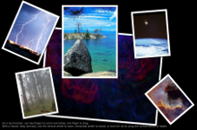

Photo Surface
A QML app for touch devices that uses a Repeater with a FolderListModel to access content in a folder, and a PinchHandler to handle pinch gestures on the fetched content.

Photo Surface demonstrates how to use a Repeater with a FolderListModel and a FolderDialog to access images from a folder selected by a user, and how to handle dragging, rotation and pinch zooming within the same item using Qt Quick Input Handlers.
All the app code is contained in one QML file, photosurface.qml. Inline JavaScript code is used to place, rotate, and scale images on the photo surface.
Running the Example
To run the example from Qt Creator, open the Welcome mode and select the example from Examples. For more information, visit Building and Running an Example.
Creating the Main Window
To create the main window for the Photo Surface app, we use the Window QML type as the root item. It automatically sets up the window for use with Qt Quick graphical types:
Window { id: root visible: true width: 1024; height: 600 color: "black" title: Application.displayName + " : " + folderModel.folder property real defaultSize: 200 property real surfaceViewportRatio: 1.5 property var imageNameFilters: ["*.png", "*.jpg", "*.gif"] // overridden in main.cpp
Accessing Folder Contents
We use a Repeater QML type together with the FolderListModel to display at least the GIF, JPG, and PNG images located in a folder (although main.cpp may expand the list of supported image types):
Repeater {
model: FolderListModel {
id: folderModel
objectName: "folderModel"
showDirs: false
nameFilters: root.imageNameFilters
}
To use the FolderListModel type, we must import it:
import Qt.labs.folderlistmodel
We use a FolderDialog to enable users to select the folder that contains the images:
FolderDialog {
id: folderDialog
title: qsTr("Choose a folder with some images")
onAccepted: folderModel.folder = selectedFolder
}
To use the FolderDialog type, we add the following import statement:
import QtQuick.Dialogs
We use the folderDialog.open() function to open the file dialog when the initial slide show finishes, unless a folder path has been given as a command-line argument:
Component.onDestruction: {
folderIcon.visible = true
const lastArg = Application.arguments.slice(-1)[0]
const standardPicturesLocations = StandardPaths.standardLocations(StandardPaths.PicturesLocation)
const hasValidPicturesLocation = standardPicturesLocations.length > 0
if (hasValidPicturesLocation)
folderDialog.currentFolder = standardPicturesLocations[0]
if (/.*hotosurface.*|--+/.test(lastArg)) {
if (hasValidPicturesLocation)
folderModel.folder = standardPicturesLocations[0]
else
folderDialog.open()
}
Users can also click the folder dialog icon to open it. We use an Image QML type to display the icon. Inside the Image type, we use a TapHandler with the onTapped signal handler to call the folderDialog.open() function:
Image {
id: folderIcon
visible: false
anchors.top: parent.top
anchors.left: parent.left
anchors.margins: 10
source: "resources/folder.png"
TapHandler { onTapped: folderDialog.open() }
HoverHandler { id: folderMouse }
ToolTip.visible: folderMouse.hovered
ToolTip.text: qsTr(`Open an image directory (${openShortcut.nativeText})`)
ToolTip.delay: 1000
Shortcut {
id: openShortcut
sequence: StandardKey.Open
onActivated: folderDialog.open()
}
}
Displaying Images on the Photo Surface
We use a Rectangle as a delegate for a Repeater to provide a frame for each image that the FolderListModel finds in the selected folder. We use JavaScript Math() methods to place the frames randomly on the photo surface and to rotate them at random angles, as well as to scale the images. The border color indicates the state of interaction:
delegate: Rectangle {
required property date fileModified
required property string fileName
required property url fileUrl
id: photoFrame
objectName: "frame-" + fileName
width: image.width * (1 + 0.10 * image.height / image.width)
height: image.height * 1.10
scale: root.defaultSize / Math.max(image.sourceSize.width, image.sourceSize.height)
border.color: pinchHandler.active || dragHandler.active ? "darkturquoise"
: mouse.hovered ? "darkseagreen"
: "saddlebrown"
border.width: 3 / scale
antialiasing: true
Component.onCompleted: {
x = Math.random() * root.width - width / 2
y = Math.random() * root.height - height / 2
rotation = Math.random() * 13 - 6
}
Image {
id: image
anchors.centerIn: parent
fillMode: Image.PreserveAspectFit
source: photoFrame.fileUrl
antialiasing: true
}
Handling Drag and Pinch Gestures, and the Mouse
We use a DragHandler and a PinchHandler in each photo frame to handle dragging, pinch zooming and rotation:
PinchHandler {
id: pinchHandler
minimumRotation: -360
maximumRotation: 360
minimumScale: 0.1
maximumScale: 10
grabPermissions: PointerHandler.CanTakeOverFromAnything // and never gonna give it up
onActiveChanged: if (active) photoFrame.z = ++flick.highestZ
}
DragHandler {
id: dragHandler
onActiveChanged: {
if (active)
photoFrame.z = ++flick.highestZ
else
anim.restart(centroid.velocity)
}
}
Because the PinchHandler is declared inside the Rectangle, the PinchHandler.target property is implicitly set so that pinch gestures manipulate the Rectangle. The rotation properties specify that the frames can be rotated to all angles, and the scale properties specify that they can be scaled between 0.1 and 10. The pinch gesture works equally well on a touchscreen or multi-touch touchpad. Transforming the frame transforms its contents (the Image).
The DragHandler.target property is implicitly set as well, so that you can drag a photo with one finger on a touchscreen or touchpad, or with a mouse. In the DragHandler's onActiveChanged signal handler, we raise the selected photo frame to the top by increasing the value of its z property (while the shared highestZ property holds the largest z value that has been used so far). When dragging ends, we begin an animation to keep it moving in the same direction for a little while, slowing down and coming to a stop. If you "fling" a photo past the edge of the surface, the surface expands to accommodate its new position. You can move around to view different parts of the surface via the ScrollView that contains the Repeater and all the photo frames that it populates.
Since you can drag two photos with two fingers via their DragHandlers, and you can also pinch one PinchHandler with two fingers, and collections of photos tend to pile on top of each other, we need to adjust grabPermissions so that the PinchHandler has priority: when the pinch gesture begins, it does not allow the DragHandlers to take over the touchpoint grabs again.
To make the example more interactive on computers without touch devices, we add the HoverHandler on which the border.color above depends, and two WheelHandlers. One allows you to hold down the Ctrl key and use the mouse wheel to twirl the photo around the mouse cursor; with the other, you can hold down the Shift key and use the mouse wheel to zoom in or out of the position under the cursor. Both of these also raise the photo in the same way that the DragHandler above does it:
HoverHandler { id: mouse }
WheelHandler {
acceptedModifiers: Qt.ControlModifier
property: "rotation"
onActiveChanged: if (active) photoFrame.z = ++flick.highestZ
}
WheelHandler {
acceptedModifiers: Qt.ShiftModifier
property: "scale"
onActiveChanged: if (active) photoFrame.z = ++flick.highestZ
}
See also QML Applications.